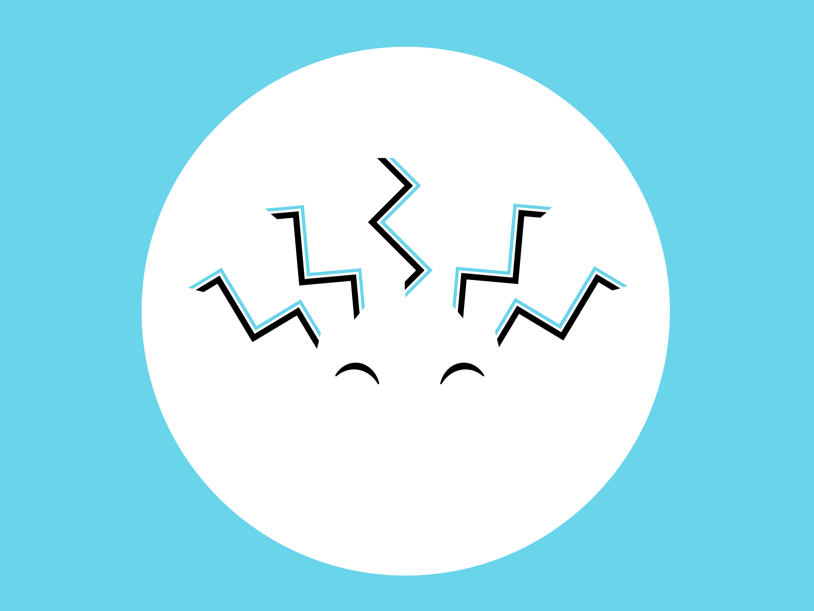

SaysKez Branding
Complete personal brand and visual identity for a creative monster

Brief:
Create a complete personal brand, from market positioning to a complete visual identity, online presence, and style guide.
Goals:
- Capture the brand's quirky personality and bold style in a flexible visual identity
- Create a flexible identity that can be expanded and function across various platforms
- Pack the character of the brand into copywriting and every expression, visual or otherwise, of the brand
- Use consistent graphical devices and designs with personality to build a world around the identity

Approach:
Before pen could be put to paper, extensive research and analysis was undertaken to evaluate both visual identity and branding in general as well as a particular marketing niche and the essence of the personal brand. The aim was to create a multifaceted and flexible brand that represented my own range while distilling the core of who I am and what I do: designs with personality in bold and minimal style.

Execution:
First to be designed was the monogram, distilling KT into three basic shapes that could be applied across the visual identity and form the building blocks of the visual identity. It stands as a representation of the brand’s style in a simple and bold manner. On the other hand, the visual marque was created as an avatar of the brand’s character, a smiling sun with the triangles that are a staple of the identity built into the curly hair that most people recognise me by. The wordmark stands in the middle, unifying the two with bold and characterful geometric styling.
A simple three colour system was devised to match the bold but minimal identity. The sunny day blue can be calming and friendly on a white background or a bold splash on black, perfect for the brand’s dual cute and bold style. The flexible design of each asset allows the identity to be expanded with more colours thanks to emphasis on the usage of the colour rather than the colour itself.
The Result:
The most challenging aspect of the project was not the design itself but creating a brand that could capture me as a designer. The process reinforced how essential it is that designs reflect the subject and convey their values and style. A design can be technically good but if it does not convey your character and not just what you do but who you are, do you really want it to be your visual representation?
This reinforced to me how all encompassing a quality identity must be, from the visual brand to the tone of every piece of copywriting. I am only satisfied when there is character in every mark. With that kind of established personality, even an illustrated portfolio website can become an extension of the brand.